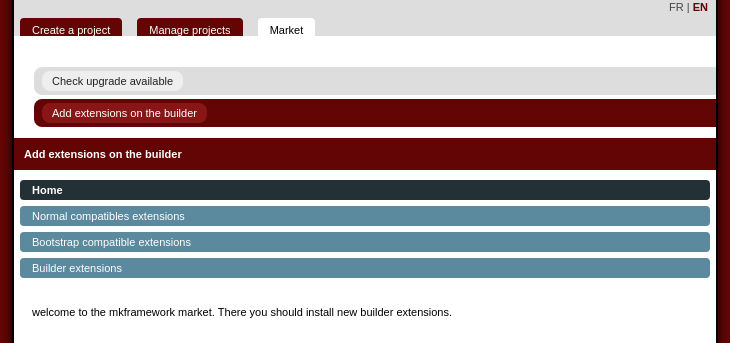
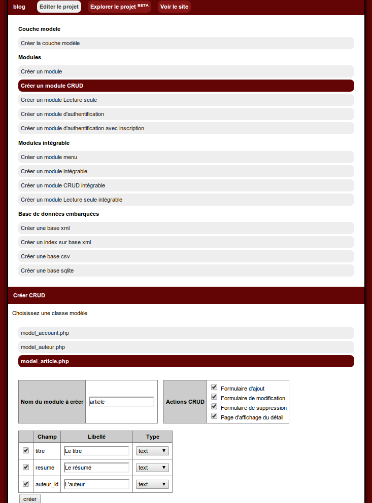

News
2018/05/15 Update the mkframework distribution
You have now 3 repositories- framework lib only
- builder (web generator) only
- a package wich contains every things to start
2017/12/26 Correction of the oracle profil connexion
A user told me that the default Oracle connexion file was not comptabile with the builder. I fixed itThanks llaffont ;)
2017/07/11 update download system
Two points:- We add a json file which contains the framework version number, which provide the way to know the version even if you download the archive version then rename it
- We change the download system, now you use the github respository to download the zip archive of the framework
2017/05/22 Mysql driver update
Add protection quotes when ORM execute insert/update SQL requestYou can now use fields with "preserved word" liek order, limit, group...
2016/11/03 GoogleMap module upgrade
Google updated his API a few weeks ago, you need to fill a key for your moduleThe googleMap module is updated to be compatible with this patch, the website too
For information, you have two way to get a module, on the website , or with the market le market
This is the new method to fill this key
$oModuleGoogleMap=new module_googleMap();
$oModuleGoogleMap->setKey('VOTRECLEGOOGLEMAP');
2016/10/28 Builder navigation update + some bugfix
Since the version v4.128.0, you can see the new navigation with a Breadcrumbs.There is some fix to make the framework php7 compatible and some bugfix
For info, the changelog is available here
2016/10/08 Convert Crud Multi module for your bootstrap applications
You can generate now modules CRUD multi line for your bootstrap application (version >= 4.126.2)2016/04/16 Add a test unit module in the builder
Unit tests are often missed because of the difficulty to writeTo help you, a new version of the framework provide you a new module in the builder to generate template for your project.
You need the version of ramework >= 4.125.0
Tutorials will arrive to explain to you how use it.
2016/01/14 Plugin debug: new feature
In some of case, you need to add spy on a variable but because of a redirection you lose the spy.You can now spy despite redirection with this method:
plugin_debug::addSessionSpy('label',$oVar);
For example, you have an author form
public function _edit(){
$tMessage=$this->processSave();
$oAuteur=model_auteur::getInstance()->findById( _root::getParam('id') );
$oView=new _view('auteur::edit');
$oView->oAuteur=$oAuteur;
$oView->tId=model_auteur::getInstance()->getIdTab();
$oPluginXsrf=new plugin_xsrf();
$oView->token=$oPluginXsrf->getToken();
$oView->tMessage=$tMessage;
$this->oLayout->add('main',$oView);
}
We need to check if the process enter in save condition
private function processSave(){
if(!_root::getRequest()->isPost() ){ //si ce n'est pas une requete POST on ne soumet pas
return null;
}
$oPluginXsrf=new plugin_xsrf();
if(!$oPluginXsrf->checkToken( _root::getParam('token') ) ){ //on verifie que le token est valide
return array('token'=>$oPluginXsrf->getMessage() );
}
$iId=_root::getParam('id',null);
if($iId==null){
$oAuteur=new row_auteur;
}else{
$oAuteur=model_auteur::getInstance()->findById( _root::getParam('id',null) );
}
$tColumn=array('nom','prenom');
foreach($tColumn as $sColumn){
$oAuteur->$sColumn=_root::getParam($sColumn,null) ;
}
if($oAuteur->save()){
//une fois enregistre on redirige (vers la page liste)
//on ajoute un espion sur cette variable
plugin_debug::addSessionSpy('auteur',$oAuteur);
_root::redirect('auteur::list');
}else{
return $oAuteur->getListError();
}
}

2015/11/25 Application now available
Next step is launched, you can now purpose modules and plugins on your applicationYou don't need go to the website, you can use the market and install it with two clics
Now you can install GoogleMap, Guriddo modules or new plugin with few clics
Tutorials will be available to explain how write/purpose your own modules/plugins to the market.
2015/11/04 Upgrade builder market
Now you can install new builder extension with the new Market.Step 2 is launched (2/3), you should submit and/or install new extension on the builder without go to the website ;)
It's easier, you don't have to download and install zip archive ;)
Then you will have tutorials and process to submit new extension builder to the market.
Next step, we will add an Application market which will provide you the way to install new modules/plugins like (googleMap,phpExcel,Guriddo...)
This new feature will be installable with the new Market :)

2015/10/26 Important update of the builder
A new version of the framework which is a turning point in its history ;)You have in this version:
- new multilingual builder (web generator)
- modules refactorisation which become extensions
- the arrival of the new builder: lot 0 which only manage updates (of builder extension)
In the next days we will fix new bugs on this important update.
Then, we will continue on:
Builder market:
- update of the market to provide the way to add new extensions
- write a tutorial to explain how YOU can propose a new extension for the builder
Application market:
- new applicaiton market which provite to add modules, plugins...
- modules/plugins update management
2015/10/14 Auth module update
You can put all your website under authentication (var auth.enabled in conf/site.ini.php) with an exception list of moduleWith the new version (>= v4_118_0_r287), add in file conf/site.ini.php
[auth]
(...)
;liste des modules non concerne par l'auth: separe par des virgules
module.disabled.list=moduleAexclure,autreModuleAexclure
2015/10/13 New roadmap page
A new "roadmap" page has been created, it shows to you works in progress and futures features2013/10/04 Builder: "authenticate + sign in" module update
The module generated check if the user exist before saving it2013/09/30 Builder: Update : CRUD has a new feature
You can define the label
2013/09/22 Update of the builder and add a feature
You can generate a private module + an insert formLinks are grouped by type of link
2013/09/15 New features: the var cache
You can use a cache feature. It provide you 2 advantages:- be more performant
- discharge you SGBD database
note: you can indicate a timeout of validity for every cache
An example
public function findAll(){
$sId='articleFindAll';
//is there a cache var ?
if(_root::getCacheVar()->isCached($sId) ){
//if yes, we get the object array in cache
$tArticle=_root::getCacheVar()->getCached($sId);
}else{
//if no, we execute the request in the ORM and we save result in cache
$tArticle = $this->findMany('SELECT * FROM '.$this->sTable.' ');
_root::getCacheVar()->setCache($sId,$tArticle);
}
return $tArticle;
}
2013/09/10 Two new methods in ORM: findManySimple et findOneSimple
If you need performance, you can use this new methods wich returns simple objects (stdclass)You can show rows more quickly than findMany et findOne, but be aware that objects returns are simple, you can't interact with it: only show it.
2013/09/08 New tutorial to create authenticate module
A new tutorial explain you how generate an authenticate module there2013/08/20 Builder updates
You can generate now a private access moduleThe code browser display better the ini configuration files
2013/08/17 The builder is better and the site is multi-language
You can generate with the builder, read-only module, it's like a CRUD but you can only list and display rowsThe site is currently multi-language
2013/08/09 Mkframework available on GitHub
After discussions about this, and to increase the way to provide fix and new features, i provide it now on Github too.The adress: https://github.com/imikado/mkframework
For information, the subversion repository remains active, i will provide updates on both of them, but i suggest to use the subvesion for production environment.